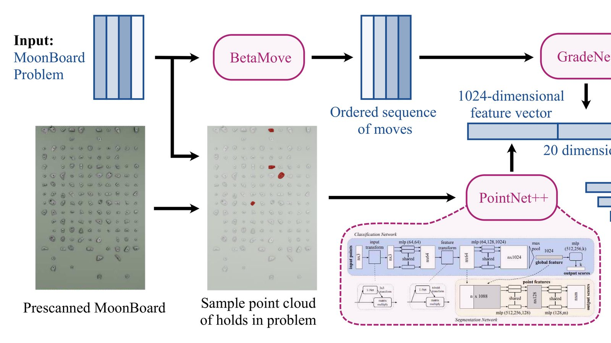

PointGrade: Geometric Priors for Grading MoonBoard Problems
arXiv preprint arXiv:2609.17770, 2026.

Abstract
A MoonBoard is a standardized bouldering wall used in gyms around the world. Climbs up the wall limited to only a subset of holds are known as problems. We introduce PointGrade, a novel machine learning approach to predicting the difficulty of a MoonBoard problem. By sampling a point cloud from pre-scanned meshes of every hold, our model combines 3D object classification architecture with existing sequence-based approaches to difficulty grade prediction. Our method captures latent geometric information contained the climb, outperforming other work on the problem that neglect this data.
Cite
B. Stotz, N. Wang, D. Nogina, C. Zhang, J. Yin, A. Huang, B. Yang, J. Li, J. Salzman, S. Feiner, and S. Sellán, “PointGrade: Geometric Priors for Grading MoonBoard Problems,” arXiv preprint arXiv:2609.17770, 2026.
@misc{stotz2026pointgrade,
title={PointGrade: Geometric Priors for Grading MoonBoard Problems},
author={Stotz, Beatrice and Wang, Ningna and Nogina, Daria and Zhang, Caroline and Yin, Jiyang and Huang, Amy and Yang, Ben and Li, Jace and Salzman, Joel and Feiner, Steven and Sell{\'a}n, Silvia},
year={2026},
eprint={2609.17770},
archivePrefix={arXiv},
primaryClass={cs.GR}
}